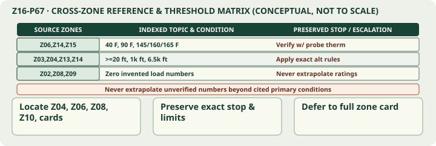

Z16-P67 · Field reference atlas · New manuscript
Units, Temperature Conversions and Non-Extrapolation Rules
Locate the original encyclopedia cards for units, Temperature Conversions and Non-Extrapolation Rules.
When it applies · Offline reference lookup. The linked chapter defines the situation, audience and limits.
Equipment · Offline reader or the complete linked source cards in print.

Actions
- Open Z04-P02 for turn acceptable snow into treated water; Z14-P39 for track refrigerator and freezer safety continuously with appliance thermometers.[A10, W01, P17]
- Open Z14-P57 for apply exact local elevation altitude adjustments before canning; Z12-P13 for recognize why no ice is universally safe and thickness guides have narrow scope.[A10, P14, X01]
- Read the linked card’s applicability, equipment and stop conditions together. Keep review and source limitations attached to any excerpt.[A10, ED]
Failure recognition · Acting on a keyword or title while overlooking an upstream exception or stop condition.[A10, ED]
Verify · Confirm the exact page ID and read the full conditions before using the reference.[A10, ED]
Stop or change course · If the situation falls outside a linked card’s conditions or its stop rule applies, stop using this index as a decision aid. Follow the full card and current local directions.[A10, ED]
Evidence and editorial notes
- A10 · FEMA / Ready.gov · Make a Plan (current web edition)
- Section: Offline reader navigation, historical lineage, and HOLD transparency · Conditions: Using the complete 16-zone offline archive, zone readers, and print proofs
Support: Navigation aids expose draft status, reconstruction lineage, open diagnostic photo needs, and pending specialist holds on every lookup path.
Limitations: This index entry does not independently establish any safety, regulatory or diagnostic instruction. · Conflicting evidence: None noted.
Editorial note: Index design and cross-reference policy. Substantive directions come from linked upstream chapter claims. · Specialist reviewer: Accessibility, print QA, and editorial reviewer
Primary source · checked 2026-11-24 - P14 · University of Minnesota Extension · Preserving and Preparing Food Safely (current web edition)
- Section: Altitude Adjustments, Dial-Gauge Testing, and Extension Verification · Conditions: Upper Midwest and elevated U.S. locations (above 1,000 feet elevation)
Support: Determine exact local elevation before canning (much of northern and southwestern Minnesota exceeds 1,000 feet), apply USDA altitude increases to boiling-water times or pressure-canner PSI, and use county Extension offices to verify dial gauges and recipes.
Limitations: Water boils at lower temperatures as elevation rises, causing under-processing if sea-level times or pressures are used above 1,000 feet. · Conflicting evidence: None; highlights Minnesota elevations exceeding 1,000 ft where adjustments apply.
Editorial note: Connects local elevation checks directly to Z14 canning protocols. · Specialist reviewer: University Extension food safety specialist
Primary source · checked 2026-11-24 - P17 · USDA / FDA / CDC · Food Safety During Power Outage (current web edition)
- Section: Refrigeration Loss, Insulated Coolers, and Discard Boundaries · Conditions: Power outages or appliance failures affecting home food stocks
Support: Use appliance thermometers in both fridge (≤40°F) and freezer (≤0°F), group frozen foods tightly, avoid opening doors unnecessarily, use block/dry ice with ventilation precautions only when available, and discard perishable items held above 40°F over two hours.
Limitations: Dry ice sublimates into carbon dioxide gas and causes severe frostbite on bare skin; handle with gloves and ventilate spaces. · Conflicting evidence: None; integrates Z14 cold-chain protection with Z15-R03.
Editorial note: Links food preservation stocks to outage triage and safe discard gates. · Specialist reviewer: Food safety and emergency management
Primary source · checked 2026-11-24 - W01 · CDC · How to Make Water Safe in an Emergency (2024-09-19)
- Section: Water with fuel or toxic chemicals in it · Conditions: Suspected fuel, toxic chemicals or radioactive contamination
Support: Use a different safe supply. Standard boiling and microbial disinfection do not make this water safe.
Limitations: Does not list contaminant-specific lab remediation; applies to emergency consumer decisions only. · Conflicting evidence: None across CDC/EPA emergency guidance.
Editorial note: Used as upstream hard-stop gate prior to any field treatment card. · Specialist reviewer: Drinking-water safety and public health
Primary source · checked 2026-11-24 - X01 · Minnesota DNR · General Ice Thickness Guidelines (current web edition)
- Section: General Ice Thickness Guidelines > New Clear Ice Only · Conditions: Minnesota lakes and ponds during stable winter freezing
Support: Agency thickness guidelines apply ONLY to new, clear solid ice and are NEVER a guarantee of safety; white snow-ice is roughly half as strong, and currents, springs, inlets, outlets and snow cover create hidden thin zones.
Limitations: No ice is 100% safe; one drilled thickness check does not clear an entire crossing route. · Conflicting evidence: Directly reconciles B013 P01–P05, P11 and P17 with MN DNR warnings.
Editorial note: Enforces non-guarantee ice boundaries across Z12. · Specialist reviewer: Ice safety and winter search and rescue
Primary source · checked 2026-11-24
Source lineage · New manuscript (Z16 P20 reference tables) · Classification · New manuscript.